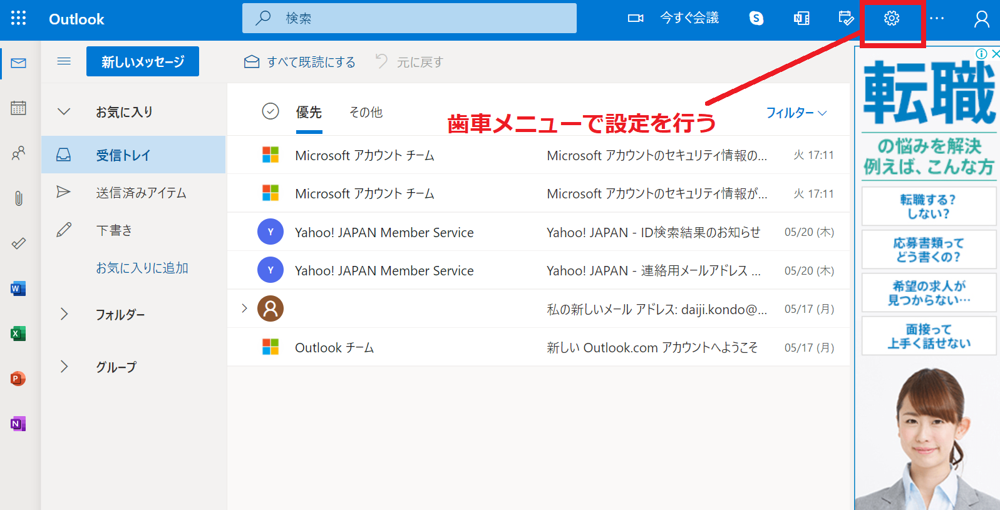
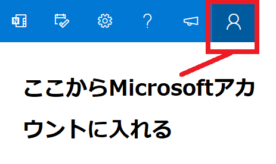
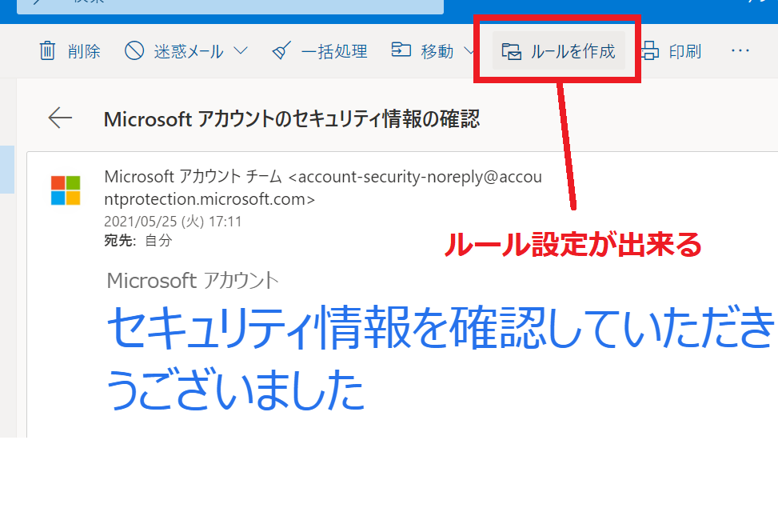

記事作成：2021年5月26日
当ページではフリーメールで提供されているOulookメールの設定やフォルダ分けなどについて説明しています。
なにも設定しない状態でも十分にメールが出来ますが、より使いやすくするためにも、気になる設定箇所について把握しておくと良いでしょう。
パソコン版の場合
まず、設定変更についてはスマホからでも出来ますが、パソコン版からの方が設定できる箇所が多くなっています。設定変更をする際は、出来る限りパソコンから開きましょう。
パソコン版の管理画面に入ったら、画面の右側にある「歯車」のメニューを探してください。設定は基本的にこの「歯車」メニューから行います。

歯車を開くと、まずは「クイック設定」が出来る部分が表示されます。ここでは主にプレビューデザインと言って、画面のデザインや表示設定が出来るようになっています。
さらに「歯車」＞「Outlookの設定を表示」から、詳細設定が出来るようになっています。
クイック設定では「テーマ」や「表示間隔」など、主に管理画面のデザインについての設定が変更できるようになっています。
表示間隔では「メール1行ごとの高さ」が変更されます。パソコン備え付けのWindowsメールやOutlookに慣れている方の場合、1行の高さを最も低い設定にすると、良いでしょう。
次に確認しておきたいのは、メールを送った時に表示される「表示名」（自分の名前がどう表示されているか）ではないでしょうか。
表示名のデフォルト（初期値）は、Outlookメールを作成する作った際に作った、Microsoftアカウントで登録した「名前」になっています。Microsoftアカウントの氏名が「ドメイン太郎」としていれば、それが表示名となっています。
この宛先名を変更したい場合は、Microsoftアカウントの「あなたの情報」＞「フルネーム」を修正することで変更できます。
画面の右にあるメニューからMicrosoftアカウントに入り設定を変えましょう。

一度、自分に送付して確認してみる
表示名の設定が終わったら、メールを自分自身に送ってみましょう。メールを送る際、宛先が修正できていない場合がありますが、まず送付してみてください。
届いたメールの表示名が変更されていれば、設定が反映されている形になります。
次はフォルダ分けの設定になります。フォルダ分けは「フォルダー」から作成することが出来ます。
Gmailと違いフォルダーに色をつけたりすることは出来ません。
フォルダーの並び替えをしたい
また作ったフォルダーを並び替えしたい場合は、ドラッグによる位置変更は出来ませんので、フォルダーの名前を変更して対応します。
つまりフォルダー名に番号などをつけて「01.メインフォルダー」「08.会社フォルダー」などにしましょう。
メールを特定のフォルダに振り分けるルール設定については、Outlookではとても簡単に出来るようになっています。
届いたメールを開いて、「ルールを設定」をクリックします。ここから既に作ってある該当フォルダを１つ選べば、それだけでルール設定が反映されます。

マウスだけでルール設定が完了しますので、とてもわかりやすく出来るようになっています。
Outlookの設定については、Gmailよりも簡易的に設定が出来るようになっているイメージを持ちます。
フォルダの色分けが出来なかったり、一部違う部分もありますが、無料で作成できるフリーメールとしては充分な設定環境になっています。
Outlook以外にもフリーメールサービスは幾つかあります。 それぞれの特徴とアカウント作成するための方法を、次に紹介しているページで解説しています。
| サービス | アドレス | 容量 | 広告表示 |
|---|---|---|---|
| Gmail | 「***@gmail.com」 | 15GB | なし |
| icloudメール | 「***@icloud.com」 | 5GB | 広告なし |
| Yahooメール | 「***@yahoo.co.jp」 | 10GB | 広告あり |

demiglaze
Web制作を始めて約19年になります（HTML/css、Photoshop、Webマーケティング）。2005年から当サイトの運営を開始。 これまでに300個以上のドメインを取得、10社を超えるレンタルサーバーを利用してきました。